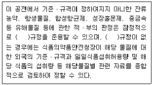
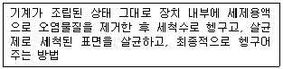
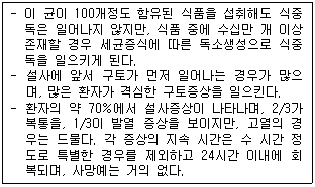
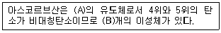
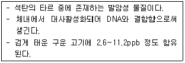
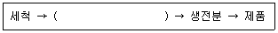
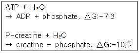

식품기사 (2007-05-13 기출문제)
1과목: 식품위생학
1. 식품에서 생성되는 Acrylamide에 의한 위험을 낮추기 위한 방법으로 잘못된 것은?
- 감자는 8℃ 이상의 음지에서 보관하고 냉장고에 보관하지 않는다.
- 튀김의 온도는 160℃이상으로 하고, 오븐의 경우는 200℃이상으로 조절한다.
- 빵이나 시리얼 등의 곡류 제품은 갈색으로 변하지 않도록 조리하고, 조리 후 갈색으로 변한 부분은 제거한다.
- 가정에서 생감자를 튀길 경우 물과 식초의 혼합물(1:1비율)에 15분간 침지한다.
(정답률: 80%)
2. 발색제에 대한 설명으로 틀린 것은?
- 염지시 사용되는 식품첨가물이다.
- 발색뿐만 아니라 육제품의 보존성이나 특유의 향미를 부여하는 효과를 나타낸다.
- 보툴리누스균 등의 일반 세균의 생육에는 영향을 미치지 않고 곰팡이의 생육을 저해한다.
- 강한 산화력을 나타내어 메트미오글로빈혈증을 일으키는 등 급성 독성을 갖고 있다.
(정답률: 68%)

3. 콜레라에 대한 설명으로 틀린 것은?
- 주증상은 심한 설사이다.
- 내열성은 약하지만 일반 소독제에 대해서는 저항력이 강한 편이다.
- 외래 전염병으로 검역 대상전염병이다.
- 비브리오속에 속하는 세균이다.
(정답률: 69%)
4. 다음 전염병 중 바이러스에 의해 전염되지 않는 것은?
- 장티푸스
- 폴리오
- 인플루엔자
- 전염성 간염
(정답률: 78%)
5. 아래는 식품공전의 총칙이다. ( )안에 공통으로 알맞은 것은?

- 국제식품규격위원회
- 국제보건기구
- 미국식품의약품안전청
- 한국식품공업협회
(정답률: 77%)
6. 「잔류성유기오염물질에 대한 협약」에 관련된 설명으로 틀린 것은?
- POPs조약ㆍ스톡홀름조약이라고 한다.
- 다이옥신을 비롯한 12종에 대한 제조ㆍ사용ㆍ수출입 등을 금지 또는 제한, 규제하는 내용을 담고있다.
- 잔류성 유기오염물질은 환경 중에서 분해되기 어렵고 체내에 축적되기 쉽다.
- 인간의 건강과 환경을 보호할 목적으로 WHO가 주도하여 미국, 일본 등 100여개의 국가가 비준하였다.
(정답률: 48%)
7. 대장균지수(Coli index)란?
- 검수 10㎖ 중 대장균군의 수
- 검수 100㎖ 중 대장균군의 수
- 대장균군을 검출할 수 있는 최소검수량
- 대장균군을 검출할 수 있는 최소검수량의 역수
(정답률: 24%)
8. 식품첨가물의 지정절차에서 첨가물 사용의 기술적 필요성 및 정당성에 해당하지 않는 것은?
- 식품의 품질을 보존하거나 안정성을 향상
- 식품의 영양성분을 유지
- 특정 목적으로 소비자를 위하여 제조하는 식품에 필요한 원료 또는 성분을 공급
- 식품의 제조ㆍ가공 과정 중 결함 있는 원재료를 은폐
(정답률: 84%)
9. 방사선조사식품에 대한 설명으로 틀린 것은?
- 식품을 일정시간 동안 이온화 에너지에 노출시킨다.
- 발아억제, 숙도지연, 보존성향상, 기생충 및 해충사멸 등의 효과가 있다.
- 조사 후 건조 또는 탈기 과정이 필요하며 잔류 독성이 있다.
- 방사선량의 단위는 Gy, kGy이며, 1Gy는 1J/kg과 같다.
(정답률: 70%)
10. 다음과 같은 식품 기계장치의 세정방법은?

- 분해세정법
- CIP법
- HACCP법
- Clean room법
(정답률: 79%)
11. 유전자 재조합식품의 안전성 평가를 위한 일반적인 조사에 해당하지 않는 것은?
- 건강에의 직접적 영향(독성)
- 유전자 재조합에 의해 만들어진 영양 효과
- 유전자 도입 전 식품의 안전성
- 알레르기 반응을 일으키는 영향
(정답률: 67%)
12. 식품공전상 기구 및 용기ㆍ포장의 기준ㆍ규격에 의한 재질별 규격에서 금속제 도금용 주석의 기준은?
- 5.0%이하
- 7.0%이하
- 9.0%이하
- 10.0%이하
(정답률: 74%)
13. 우리나라의 집단식중독 발생현황에 대한 설명으로 맞는 것은?
- 클로스트리디움 보틀리눔보다 살모넬라에 의한 환자수가 많다.
- 원인물질별 건수는 황색포도상구균 등의 세균보다 노로바이러스 등의 바이러스에 의한 것이 많다.
- 섭취장소별 환자수는 집단급식소보다 가정집이 많다.
- 1년 중 6월에 환자수가 가장 적다.
(정답률: 55%)
14. 알레르기 형태의 식중독에 대한 설명으로 틀린 것은?
- 원인식품은 꽁치, 고등어 등 붉은살 생선이다.
- 발종 시간은 잠복기가 느려 보통 2~3일 뒤에 증상이 나타난다.
- 증상은 발작, 안면홍조, 입 또는 눈의 점막출혈 등이다.
- 단백질분해물질인 히스타민 등 유해아민에 의한 것이다.
(정답률: 78%)
15. 유구조충에 대한 설명으로 틀린 것은?
- 돼지고기를 숙주로 돼지 소장에서 부화한 후 돼지 신체 조직으로 옮겨진다.
- 머리에 갈고리가 있어 갈고리촌충이라고도 한다.
- 66℃로 가열하면 완전히 사멸된다.
- 성충이 기생하면 복부불쾌감, 설사, 구토, 식욕항진 등을 일으킨다.
(정답률: 70%)
16. 아래와 같은 특성을 가지는 식중독균은?

- 리스테리아 모노사이토제네스
- 클로스트리디움 보툴리눔
- 병원성 대장균
- 황생포도상구균
(정답률: 60%)
17. 캠필로박터 식중독에 대한 설명으로 맞는 것은?
- 독소형식중독을 일으키는데, 아주 미량을 섭취하더라도 식중독에 걸릴 수 있다.
- 산소가 완전히 없는 혐기적인 조건에서만 증식ㆍ발육 할 수 있다.
- 대기상태와 같이 산소가 충분한 호기적 조건에서 최적으로 증식한다.
- 살모넬라와 장염비브리오 등 식중독균이 증식 가능한 실온(25℃)에서는 거의 증식 할 수 없다.
(정답률: 33%)
18. 식품등의 표시기준상 합성감미료에 해당하지 않는 식품첨가물은?
- 삭카린나트륨
- 아세설팜칼륨
- 글리시리진산나트륨
- 이산화티타늄
(정답률: 66%)
19. 식품위생법규상 식품취급자의 위생에 대한 설명으로 틀린 것은?
- 식품을 가공하는데 직접 종사하는 자는 매년 1회 장티푸스, 폐결핵, 전염성 피부질환 등의 건강진단을 받아야 한다.
- 전염병예방법에 의한 제1군, 제2군, 제3군 전염병은 모두 영업에 종사하지 못하는 질병이다.
- 피부병 기타 화농성질환은 영업에 종사하지 못하는 질병이다.
- 결핵에 걸린 자가 비전염성인 경우는 영업에 종사할 수 있다.
(정답률: 71%)
20. 식품의 안전성과 수분활성도(Aw)에 관한 설명으로 틀린 것은?
- 비효소적 갈변 : 다분자수분층보다 낮은 Aw에서는 발생하기 어렵다.
- 효소 활성 : Aw가 높을 때가 낮을 때보다 활발하다.
- 미생물의 성장 : 보통 세균 증식에 필요한 Aw는 0.91정도이다.
- 유지의 산화반응 : Aw가 0.5~0.7이면 반응이 일어나지 않는다.
(정답률: 68%)
2과목: 식품화학
21. 콜라겐의 기본적 구조단위는?
- gellatin
- hydroxylysine
- proline
- tropocollagen
(정답률: 57%)
22. 부제탄소원자를 가지지 않아 2개의 광학이성체가 존재하지 않는 중성아미노산은?
- isoleucine
- threonine
- glycine
- serine
(정답률: 73%)
23. cyclodextrin의 공동내부에는 수소가 배열되어 있고 환상구조의 외부에는 수산기가 배열되어 있다. 내부와 외부의 특성을 올바르게 연결한 것은?
- Lipophobic - Lipophilic
- Hydrophobic - Hydrophilic
- Hydrocolloid - Hydrocolloid
- Lipocolloid - Lipocolloid
(정답률: 63%)
24. 사후강직에 대한 설명으로 옳은 것은?
- 도살 직후 얼리면 녹은 이후에 사후강직이 일어나지 않는다.
- 근육은 도살 직후에는 미오신과 액틴이 단단히 결합하여 액토미오신을 형성한다.
- 미오신에 ATP가 흡착되면 액틴과의 결합이 방해를 받아 액토미오신의 양이 적어진다.
- 포스파타아제가 활성화되면 액토미오신의 생성이 적어진다.
(정답률: 36%)
25. 맛의 순응(adaptation)에 대한 설명으로 틀린 것은?
- 물질의 농도가 높으면 순응 시간이 길어진다.
- 미각 상태가 오래되면 감각의 강도가 급속도로 감퇴된다.
- 단맛은 쓴맛보다 순응이 빠르다.
- 신맛은 맛의 종류 중 순응이 가장 빠르다.
(정답률: 43%)
26. 아래의 ascorbic acid에 대한 설명 중 ( )안에 알맞은 것은?

- A : 만노오스, B : 2
- A : 헥소오스, B : 4
- A : 펜토오스, B : 2
- A : 리보오스, B : 4
(정답률: 44%)
27. amino-carbonyl 반응에 대한 설명으로 틀린 것은?
- 반응에 수분이 필요하다.
- 마이야르(Maillard)반응이라고도 한다.
- 환원성 2당류는 pentose보다 반응성이 더 크다.
- 아미노산 중에서는 glycine의 반응성이 가장 크다.
(정답률: 42%)
28. 식품과 함유된 단백질이 잘못 연결된 것은?
- 쌀 - oryzenin
- 고구마 - jalapin
- 감자 - tuberin
- 콩 - glycinin
(정답률: 49%)
29. 떫은맛에 대한 설명으로 틀린 것은?
- 수렴성의 감각이다.
- 단백질의 응고에 의한 것이다.
- 철 등의 중금속의 염류도 떫은맛이 느껴진다.
- 지방질이 많은 식품은 포화지방산에 의해 떫은맛이 난다.
(정답률: 56%)
30. 아래에서 설명하는 물질은?

- benzoic acid
- benzopyrene
- dibenzoyl thiamine
- benzoylthiamine disulfide
(정답률: 74%)
31. 거품과 관련된 설명 중 틀린 것은?
- 맥주와 샴페인은 기압하에서 탄산가스를 다량 용해시킨 것이다.
- 액체 중에 공기와 같은 기체가 분산된 것이 거품이다.
- 빵이나 카스텔라는 거품을 이용하여 부드러운 식감을 지니게 한다.
- 거품을 제거하기 위해서는 거품의 표면장력을 높여 주어야 한다.
(정답률: 78%)
32. α-amylase(세균성) 정량법에서 사용하는 1BAU(bacterial amylase unit)의 의미는?
- 덱스트린을 아밀라아제 1mg으로 분해하는 효소의 양
- 덱스트린 1mg을 아밀라아제로 분해하는 효소의 양
- 분당전분을 덱스트린 1g으로 분해하는 효소의 양
- 분당전분 1mg을 덱스트린화하는 효소의 양
(정답률: 18%)
33. 미오신(myosin)의 기능 중 꼬리부분에서 일어나는 것은?
- ATP를 ADP와 무기인산으로 가수분해
- 굵은 필라멘트 형성
- 액틴과 결합하여 액토미오신의 복합체 형성
- 필라멘트의 표면에 돌출되어 구조 형성
(정답률: 26%)
34. 식품의 조직감 중 국수의 반죽처럼 길게 늘어나는 신전성을 측정하는 장치로 이용되는 것은?
- extensograph
- viscometer
- farinograph
- amylograph
(정답률: 75%)
35. 다음 중 겔(gel)상 식품이 아닌 것은?
- 젤라틴
- 묵
- 한천
- 우유
(정답률: 85%)
36. 다음 중 우유 특유의 향기성분이 아닌 것은?
- acetone
- acetaldehyde
- butyric acid
- olein acid
(정답률: 57%)
37. Ca에 대한 설명으로 틀린 것은?
- 탄산염, 황산염의 형태로 다량 존재한다.
- 세포외액의 농도가 세포내보다 낮다.
- 혈액의 응고, 호르몬 분비 등에 관여한다.
- 단백질, 펙틴 등과 결합성이 강하다.
(정답률: 57%)
38. 단당류 중 glucose 와 mannose는 화학구조적으로 어떤 관계인가?
- anomer
- epimer
- 동위원소
- acetal
(정답률: 55%)
39. gluconeogenesis에 대한 설명으로 옳은 것은?
- glucose가 아미노산, 젖산, 글리세롤, 피루브산으로 분해되는 과정이다.
- 필요한 효소는 대부분 위장에 존재한다.
- 동물에서는 미토콘드리아내와 세포질에서 이루어진다.
- 혈당농도가 일정치 이상이 되면 글루카곤, 아드레날린 등이 분비되어 이 반응을 막는다.
(정답률: 38%)
40. 단백질의 정색반응 중 Millon 반응은 어떤 기를 가진 아미노산에 의해서 일어나는가?
- imidazol기
- benzene 기
- phenol 기
- indol 기
(정답률: 44%)
3과목: 식품가공학
41. 아래의 고구마 전분의 제조과정 중 ( )안에 들어갈 공정을 바르게 나열한 것은?

- 마쇄 → 전분유 → 전분분리 → 체질
- 마쇄 → 체질 → 전분유 → 전분분리
- 전분분리 → 전분유 → 마쇄 → 체질
- 전분분리 → 체질 → 마쇄 → 전분유
(정답률: 57%)
42. 유지를 가공하여 경화유를 만들 때 촉매제로 사용되는 것은?
- 질소
- 수소
- 니켈
- 헬륨
(정답률: 74%)
43. 두부를 제조할 때 두유의 단백질 농도가 낮을 경우 나타나는 현상과 거리가 먼 것은?
- 두부의 색이 어두워진다.
- 두부가 딱딱해진다.
- 가열변성이 빠르다.
- 응고제와의 반응이 빠르다.
(정답률: 46%)
44. 다음 중 LMP(Low Methoxy Pectin)에 대한 설명으로 잘못된 것은?
- gel을 형성할 수 있는 pH 범위가 비교적 넓다.
- 설탕을 넣지 않으면 gel을 형성하지 못한다.
- 칼슘을 넣으면 안정된 gel을 형성한다.
- 다이어트용 잼과 젤리에 이용될 수 있다.
(정답률: 52%)
45. 식품공전상 우유류의 성분규격으로 틀린 것은?
- 산도(%) : 0.18% 이하 (젖산으로서)
- 무지방고형분(%) : 8.0이상
- 포스파타제 : 1ml당 2g이하(가온살균제품에 한한다.)
- 대장균군 : 1ml 당 2이하(멸균제품의 경우는 음성)
(정답률: 53%)
46. 육류가공시 증량제로서 전분을 10% 첨가하면 최종적으로 몇 %의 증량효과를 갖는가?
- 10%
- 20%
- 30%
- 40%
(정답률: 62%)
47. 다음 중 분말건조제품의 복원성을 향상시키는 가장 효과적인 방법은?
- 입자를 매우 작게 하여 서로 뭉치는 경향을 띠게 한다.
- 건조제를 첨가하여 물의 표면장력을 증가시킨다.
- 입자표면에 응축이 일어나 부착성을 갖도록 수증기 또는 습한 공기로 처리한 다음 건조ㆍ냉각한다.
- 분무건조한 입자 상호간의 접촉을 차단하기 위하여 입자의 운동을 직선형으로 유도한다.
(정답률: 54%)
48. Q10값은 온도의 안정성에 대한 지침으로 사용될 수 있는데 Q10값이 낮을 때의 의미로 가장 적합한 것은?
- 온도가 낮을수록 저장일수가 짧다.
- 온도가 높을수록 안전성이 크다.
- 온도의 변화가 안정성에 매우 큰 영향을 준다.
- 온도의 변화가 안정성에 비교적 적은 영향을 준다.
(정답률: 26%)
49. 다음 중 잼의 저장성이 높은 이유로 가장 적합한 것은?
- 전처리 과정에서 원료를 가열ㆍ살균하기 때문이다.
- 유기산으로 인하여 미생물의 생존에 적합하지 않은 pH 환경조건이 형성되기 때문이다.
- 펙틴의 함량이 많은데 미생물이 이 펙틴을 소화ㆍ흡수 하지 못하기 때문이다.
- 높은 당도에 의한 높은 삼투압이 미생물의 생육을 저해하기 때문이다.
(정답률: 65%)
50. 고기의 해동강직에 대한 설명으로 틀린 것은?
- 골격으로부터 분리되어 자유수축이 가능한 근육은 60~80%까지의 수축을 보인다.
- 가죽처럼 질기고 다즙성이 떨어지는 저품질의 고기를 얻게 된다.
- 해동강직을 방지하기 위해서는 사후강직이 완료된 후에 냉동해야 한다.
- 냉동 및 해동에 의하여 고기의 칼슘결합력이 높아져서 근육수축을 촉진하기 때문에 발생한다.
(정답률: 50%)
51. 포말건조(foam drying)에 관한 설명으로 틀린 것은?
- 퍼프(puff) 건조라고도 한다.
- 건조 전에 체표면적을 넓히기 위해 안정제를 첨가한다.
- 건조 온도는 55~90℃이다.
- 주로 고체 식품의 건조에 이용된다.
(정답률: 57%)
52. 액란(liquid egg)을 건조하기 전에 당을 제거하는 이유로 부적합한 것은?
- 난분의 용해도 감소 방지
- 변색방지
- 난분의 유동성 저하 방지
- 이취의 생성 방지
(정답률: 54%)
53. 25℃의 공기(밀도 1.149kg/m3)를 80℃로 가열하여 10m3/s 의 속도로 건조기 내로 송입하고자 할 때 소요 열량은? (단, 공기의 비열은 25℃에서는 1.0048kJ/kgㆍK, 80℃에서는 1.0090kJ/kgㆍK이다.)
- 636kW
- 393kW
- 318kW
- 954kW
(정답률: 37%)
54. 우유단백질(카제인)의 등전점은?
- pH 7.6
- pH 6.6
- pH 5.6
- pH 4.6
(정답률: 59%)
55. 전분의 가수분해정도(DE :dextrose equivalent)에 따른 변화가 바르게 설명된 것은?
- DE가 증가할수록 점도가 낮아진다.
- DE가 증가할수록 감미도가 낮아진다.
- DE가 감소할수록 삼투압이 높아진다.
- DE가 감소할수록 결정성이 높아진다.
(정답률: 60%)
56. 두부제조시 사용되는 응고제와 두부의 특성에 대한 설명으로 틀린 것은?
- 황산칼슘은 반응이 완만하여 사용하기 편리하며 수율이 좋다.
- 염화마그네슘은 응고시간이 빠르고 압착시 물이 잘 빠진다.
- 글루코노델타락톤은 표면을 매끄럽게 한다.
- 염화칼슘은 두부의 풍미와 맛을 좋게 한다.
(정답률: 46%)
57. 유지류의 가공 공정에 대한 설명으로 틀린 것은?
- 쇼트닝은 마가린과는 달리 유지만을 혼합하므로 유화공정이 필요 없다.
- 유지의 정제공정 중의 윈터화과정(winterization)은 샐러드유로 사용되는 면실유의 혼탁물질을 제거하는 공정이다.
- 탈검은 부분적인 정제과정으로 검물질과 제거되지 않은 유리지방산을 완전히 제거하기 위해 실시한다.
- 중화과정은 보통 산정제과정이라 불리며 품질저하 원인물질인 유리지방산을 제거하기 위하여 HCl과 반응시켜 제거한다.
(정답률: 35%)
58. 계란의 저장 중에 일어나는 현상이 아닌 것은?
- 알껍질이 반들반들해진다.
- 흰자의 점성이 줄어든다.
- 기실이 커진다.
- 호흡작용으로 인해 산성으로 된다.
(정답률: 62%)
59. 가스치환 포장이 이용되는 식품, 봉입가스, 목적의 연결이 틀린 것은?
- 감자칩 - N2 - 유지산화방지
- 녹차 - CO2 - 비타민C 산화방지
- 도시락 - CO2 - 세균의 생육억제
- 식용유 - N2 - 유지산화방지
(정답률: 43%)
60. 라면의 일반적인 제조공정에 대한 설명으로 틀린 것은?
- 전분의 α화는 100~1⑤℃ 정도의 증기를 불어 넣어 2~5분간 찐다.
- 전분의 α화 고정은 열풍건조한 면을 튀김용의 용기에 일정량 넣어 130~150℃의 온도에서 2~3분간 튀긴다.
- 튀긴 후의 면을 충분히 냉각하지 않고 포장하면 포장지 내면에 응축수가 생겨 유지의 산패가 촉진된다.
- 반죽은 밀가루의 5%에 해당하는 물에 원료를 넣고 혼합, 반죽하여 수분함량을 1%로 조절한다.
(정답률: 50%)
4과목: 식품미생물학
61. 곰팡이 균총(colony)의 색깔은 무엇에 의해서 주로 영향을 받는가?
- 포자
- 기중균사(영양균사)
- 기균사
- 격막(격벽)
(정답률: 59%)
62. Rhizopus 속의 특징으로 틀린 것은?
- 포자낭은 구형이다.
- 집락의 색은 처음에는 회색이고 흰색으로 변한다.
- Mucor 속보다 한천배지에서의 성장이 더 빠르다.
- 호기적인 조건에서 잘 자란다.
(정답률: 34%)
63. 대장균 O157 : H7 이라는 균의 명칭 중 O 와 H 가 의미하는 것은?
- O : 체성항원, H : 편모항원
- O : 편모항원, H : 체성항원
- O : 협막항원, H : Vi 항원
- O : Vi 항원, H : 협막항원
(정답률: 46%)
64. 그람양성균의 일반적인 특징이 아닌 것은?
- 일부집단은 내생포자를 형성한다.
- 2분법으로 생식한다.
- 다양한 부속기구를 가지고 있어 운동성이다.
- 보통 화학무기종속영양을 한다.
(정답률: 27%)
65. 효모의 세포벽을 분석하였을 때 일반적으로 가장 많이 검출될 수 있는 화합물은?
- mannan
- protein
- lipid and fats
- glucosamine
(정답률: 54%)
66. 효모와 곰팡이에 관한 설명으로 틀린 것은?
- 효모는 곰팡이보다 작은 세포이다.
- 효모와 곰팡이는 낮은 pH나 낮은 온도의 환경에서도 잘 자란다.
- 곰팡이는 효모보다 대사활성이 높고 성장속도도 빠르다.
- 효모는 곰팡이보다 혐기적인 조건에서 성장하는 종류가 많다.
(정답률: 32%)
67. 다음 중 산막효모가 아닌 것은?
- Hansenula 속
- Debaryomyces 속
- Saccharomyces 속
- Pichia 속
(정답률: 57%)
68. Homo 젖산균과 Hetero 젖산균에 대한 설명 중 옳은 것은?
- Leuconostoc 속은 Homo 형이고, Pediococcus 속은 Hetero 형이다.
- Homo 젖산균은 당으로부터 젖산, 에탄올, 초산을 생성하며, Hetero 젖산균은 젖산만을 생성한다.
- EMP 경로에 따라서 포도당 1mole에 대해 2 mole의 ATP가 생성되는 것이 Homo 젖산발효이다.
- 대부분의 Lactobacillus 속은 Hetero형이다.
(정답률: 73%)
69. 다음 미생물 중 그 배양액으로부터 비타민 B12를 분리하여 얻는데 이용되지 않는 것은?
- Streptomyces 속
- Bacillus 속
- Flavobacterium 속
- Debaryomyces 속
(정답률: 32%)
70. 파지(phage)에 감염되었으나 그대로 살아가는 세균세포를 무엇이라고 하는가?
- 비론(viron)
- 숙주세포
- 용원성세포
- 프로파지
(정답률: 57%)
71. 물의 분변오염 가능성을 검사하는 지표세균의 조건으로 잘못된 것은?
- 사람에게 치명적인 위해를 끼치는 것이어야 한다.
- 장내병원균보다 더 오래 살 수 있어야 한다.
- 분석방법이 민감하여 낮은 수준의 지표세균도 감지 할 수 있어야 한다.
- 수돗물, 강, 지하수, 바닷물, 폐기수 등 모든 종류의 분석에 사용될 수 있어야 한다.
(정답률: 60%)
72. 간장제조시 풍미에 관여하는 대표적인 내염성 젖산세균은?
- Zygosaccharomyces rouxii
- Pediococcus halophilus
- Staphylococcus aureus
- Bacillus subtilis
(정답률: 33%)
73. 미생물의 유전에 관계되는 현상 중 virus 에 의한 것은?
- Recombination
- Transformation
- Transduction
- Heterocaryon
(정답률: 61%)
74. photoautotrophs가 탄소원으로 이용하는 것은?
- C2H5OH
- C6H12O6
- CO2
- CH4
(정답률: 74%)
75. 60분마다 분열하는 세균의 최초 세균수가 5개일 때 3시간 후의 세균수는?
- 90개
- 40개
- 120개
- 240개
(정답률: 73%)
76. 식품과 관련된 균주의 연결이 잘못된 것은?
- 개량 메주 - Aspergillus oryzae
- 간장 부패 - Zygosaccharomyces salus
- 구연산 - Aspergillus niger
- 버터 - Lactobacillus acidophilus
(정답률: 50%)
77. 플라스미드(plasmid)에 관한 설명으로 틀린 것은?
- 다른 종의 세포 내에도 전달된다.
- 세균의 성장과 생식과정에 필수적이다.
- 약제에 대한 저항성을 가진 내성인자, 세균의 자웅을 결정하는 성결정인자 등이 있다.
- 염색체와 독립적으로 존재하며, 염색체 내에 삽입될 수 있다.
(정답률: 59%)
78. 다음 중 불완전균류 곰팡이에 속하는 것은?
- Aspergillus 속
- Monascus 속
- Giberella 속
- Absidia 속
(정답률: 44%)
79. 곰팡이의 유성생식으로 생기는 포자는?
- 난포자(oospore)
- 출아포자(blastospore)
- 포자낭포자(sporangiospore)
- 분절포자(arthrospore)
(정답률: 71%)
80. 남조류에 대한 설명으로 틀린 것은?
- 2분열에 의한 무성생식으로만 번식한다.
- 세포벽은 있으나 세포막은 없다.
- 가스소포를 만들어서 세포에 부력을 주어 뜨게 한다.
- 단세포 조류로서 세포 안에 핵과 액포가 없다.
(정답률: 42%)
5과목: 생화학 및 발효학
81. 빵효모의 균체 생산 배양관리 인자가 아닌 것은?
- 온도
- pH
- 당농도
- 혐기조건
(정답률: 70%)
82. 정상형 젖산발효(homo lactic acid fermentation)에서 포도당(glucose) 1kg에 의해 생성되는 젖산의 양은?
- 500g
- 1000g
- 1500g
- 2000g
(정답률: 33%)
83. 혐기대사(anaerobic metabolism)의 설명으로 틀린 것은?
- 산소를 최종전자수용체로 사용하지 않는다.
- 호기적 대사보다 ATP를 생성하는 능률이 높다.
- 유기중간체를 환원하여 산물을 만들고 CO2로의 완전산화는 하지 않는다.
- 대표적인 것은 해당 및 각종 발효과정이다.
(정답률: 66%)
84. α-glucoamylase의 특징이 아닌 것은?
- 거의 모든 생물에 존재하며 특히 효모에 풍부하게 존재한다.
- 말토오스, 아밀로오스, 올리고당을 분해한다.
- 이소말토오스에 대해서 활성이 뛰어나다.
- 말타아제라고도 한다.
(정답률: 46%)
85. 세포내 ATP양이 증가하면 에너지가 더 이상 요구되지 않기 때문에 남는 에너지는 크레아틴인산으로 저장된다. ATP 에너지가 크레아틴인산 형태로 저장될 때 몇 kcal/mol이 저장되는가? (단, 반응식은 아래와 같고, △G의 단위는 kcal/mol 이다.)

- -17.6 kcal/mol
- 3.0 kcal/mol
- -3.0 kcal/mol
- 17.6 kcal/mol
(정답률: 48%)
86. 비오틴의 결핍증은 잘 나타나지 않는데 그 이유로 적합한 것은?
- 지용성비타민으로 인체 내에 저장되므로
- 일상 생활의 자외선에 의해 합성되므로
- 아비딘 등의 당단백질의 분해산물이므로
- 장내세균에 의해서 합성되므로
(정답률: 78%)
87. 핵산에 대한 설명으로 옳은 것은?
- DNA 이중나선에서 아데닌(adenine)과 티민(thymine)은 3개의 수소결합으로 연결되어 있다.
- B-DNA의 사슬은 왼손잡이 이중나선구조를 갖고 있다.
- RNA는 알칼리 용액에서 가열하면 빠르게 분해된다.
- RNA의 이중나선은 각 가닥의 방향이 서로 반대이다.
(정답률: 24%)
88. 당밀 원료로 주정을 제조할 때의 발효법인 Hildebrandt-Erb법(two-stage method)의 특징이 아닌 것은?
- 효모증식에 소모되는 당의 양을 줄인다.
- 폐액의 BOD를 저하시킨다.
- 효모의 회수비용이 절약된다.
- 주정농도가 가장 높은 술덧을 얻을 수 있다.
(정답률: 48%)
89. 폐수처리 시에 메탄발효에 의하여 유기물을 처리하는 방법은 다음 중 어디에 속하는가?
- 활성오니법
- 살수여상법
- 혐기적처리법
- 호기적처리법
(정답률: 64%)
90. 진핵세포에 대한 설명으로 틀린 것은?
- 내부에는 막으로 둘러싸인 많은 소기관이 존재
- 세포분열이 일어날 때 유사분열과 감수분열이 관찰
- DNA는 히스톤(histone)과 복합체를 만들지 않고 존재
- 전자전달계 등의 호흡효소계가 미토콘드리아(mitochondria)에 존재
(정답률: 63%)
91. 지방산화과정에서 일반적으로 일어나는 β-oxidation의 설명으로 틀린 것은?
- 세포의 세포질 속으로 운반된 지방산은 CoA와 ATP에 의해서 활성화된다.
- acyl-CoA는 carnitine 과 결합하여 mitochondria 내부로 이동된다.
- 짝수지방산은 산화 후 acetyl-CoA만을 생성하지만 홀수지방산은 acetyl-CoA와 propionic acid를 생성한다.
- 포화지방산의 산화에는 isomerization과 epimerization의 보조적인 반응이 필요하다.
(정답률: 34%)
92. 아미노산의 탈아미노반응으로 유리된 NH3+의 일반적인 경로가 아닌 것은?
- α-keto acid와 결합하여 아미노산을 생성
- 해독작용의 하나로서 glutamine을 합성
- 간에서 요소회로를 거쳐 요소로 합성
- 간에서 당신생(gluconeogenesis)과정을 거침
(정답률: 67%)
93. 다음 중 식품세포에서 광합성을 담당하는 소기관인 엽록체(chroroplast)의 설명으로 틀린 것은?
- Thylakoids라 불리는 일련의 서로 연결된 disks로 구성된 복잡한 축구공 모양의 구조이다.
- 엽록체 중 chlorophyll 색소는 porphyrin 핵에 Fe가 결합된 구조이다.
- 엽록체에는 핵 중의 DNA와는 별개의 DNA가 존재한다.
- 엽록체 중에도 세포질에 존재하는 ribosome과는 다른 70S ribosome 이 존재한다.
(정답률: 42%)
94. 어떤 미생물의 DNA를 분리하여 GC함량을 분석한 결과가 66%였다면 이 미생물의 DNA 중 각 염기의 조성은?
- A:34%, G:66%, T:34%, C:66%
- A:33%, G:17%, T:17%, C:33%
- A:33%, G:17%, T:33%, C:17%
- A:17%, G:33%, T:17%, C:33%
(정답률: 56%)
95. 미토콘드리아에서 진행되는 전자전달계에서 ATP가 합성될 때 수소의 최종 공여체와 수용체를 바르게 연결한 것은?
- cytochrome c - H2
- cytochrome aa3 - O2
- cytochrome b - H2O
- cytochrome c1 - O3
(정답률: 50%)
96. pepsin에 대한 설명으로 틀린 것은?
- 방향족 아미노산 잔기가 펩티드 결합의 양쪽에 있을 때 빨리 분해한다.
- 펩티드 결합, 에스테르 결합, 펩티드 전이반응 등을 촉매 한다.
- 활성전구체펩시노겐(pepsinogen)A로 분비되어 위액의 산성조건하에서 생성된다.
- 최적 pH는 약 2정도이다.
(정답률: 26%)
97. 주정 생산시 주요 공정인 증류에 있어 공비점(K점)에 관한 설명으로 옳은 것은?
- 공비점에서의 알코올 농도는 95.5%(v/v), 물이 농도는 4.5%이다.
- 공비점 이상의 알코올 농도는 어떤 방법으로도 만들 수 없다.
- 99%의 알코올을 끓이면 발생하는 증기의 농도가 높아진다.
- 공비점이란 술덧의 비등점과 응축점이 78.15℃로 일치하는 지점이다.
(정답률: 36%)
98. 조미료인 Disodium 5'-Ribonucleotide를 제조하는 방법이 아닌 것은?
- 당류를 주원료로 하여 Brevibacterium 속 세균의 변이주를 이용하여 뉴클레오티드류를 배양액 중에서 직접 생성시켜 이를 단리정제하여 채취한다.
- 포도당을 황산, 수산, 또는 이온교환수지를 사용해서 5'-뉴클레오티드로 만들고 이것을 감압농축하여 제조한다.
- 아황산펄프폐액 또는 당밀을 함유하는 배약액중에서 효모를 배양하고, 효모균체에서 RNA를 식염수로 가열추출하는 RNA분해방법을 이용한다.
- 당류를 주원료로 하여 Bacillus 속 세균의 변이주를 이용하여 뉴클레오티드류를 배양액 중에서 직접 생성시키고 이를 단리후 화학적으로 5'-뉴클레오티드로 변환시킨다.
(정답률: 25%)
99. 아래에서 설명하는 효소는?
- lactase
- succinate dehydrogenase
- lactose operon
- lactate dehydrogenase
(정답률: 66%)
100. 분자식이 C6H5NO2 이며, tryptophane으로부터 생성되는 비타민은?
- riboflavin
- vitamin B6
- thiamine
- niacin
(정답률: 43%)